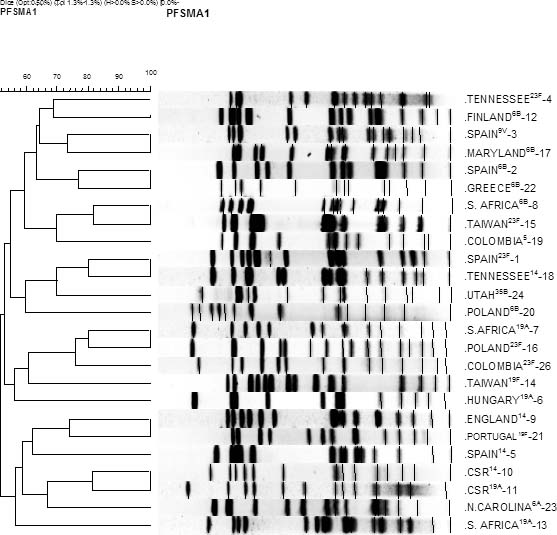

    <section>
      <div class="container justify">
        <header>
            <h1>Clone Collection</h1>
        </header>
        <div class="desc">
          <p>
            <strong> Properties of clones accepted into network as of April 2006 are described in tables below. </strong>
          </p>
          <ul>
            <li>
              <a target="_blank" href="http://web1.sph.emory.edu/PMEN/pmen_table1.html">Table 1 - PMEN clones 1-43 as at April 2006</A>
            </li>
            <li>
              <a target="_blank" href="http://web1.sph.emory.edu/PMEN/pmen_table2.html">Table 2 - MLST allelic profiles, pbp gene profiles and macrolide resistance determinants for clones as at April 2006</A>. 
            </li>
          </ul>
          <br>
          <p>
            <strong>PFGE and MLST dendrogram of clones</strong> <br><br>
          </p>
          <p>
            
          </p>
        </div>
    </div>
  </section>

